← Abrir Cozy CityTus finanzas, con calma.
Cozy Bank V1.1 · Fullscreen Glass · 1 de noviembre de 2026.
Login · escritorio
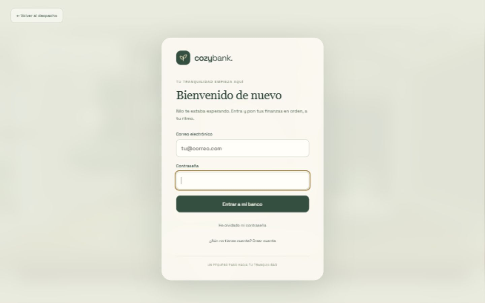
Login · escritorioRegistro
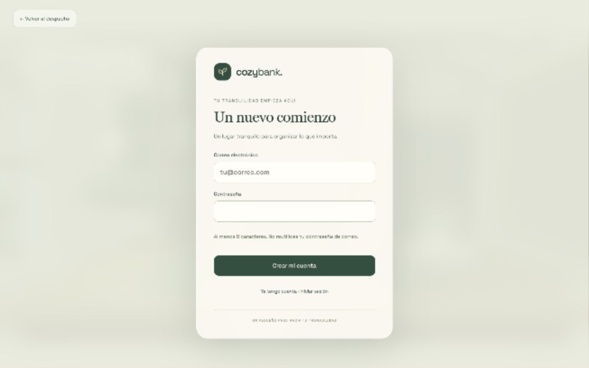
RegistroRecuperar acceso
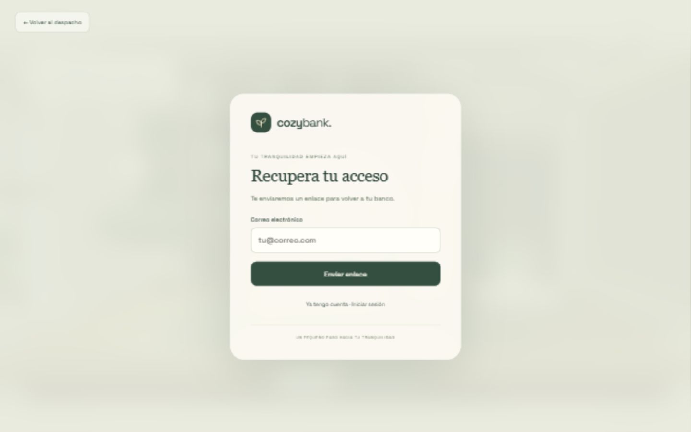
Recuperar accesoDashboard · escritorio
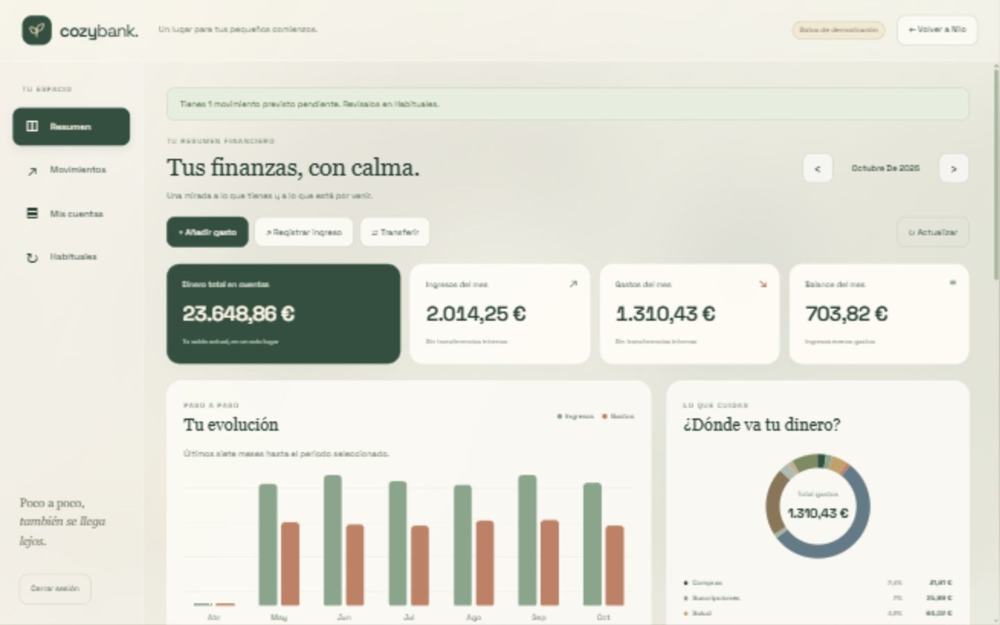
Dashboard · escritorioMis cuentas
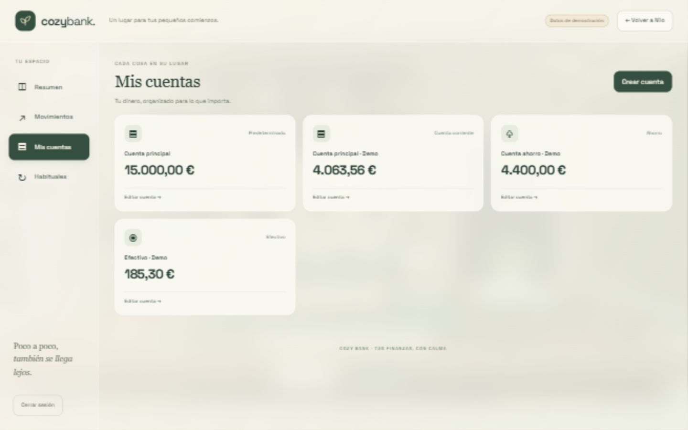
Mis cuentasMovimientos
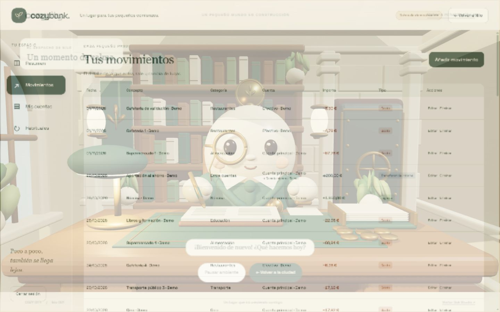
MovimientosDe vuelta con Nilo
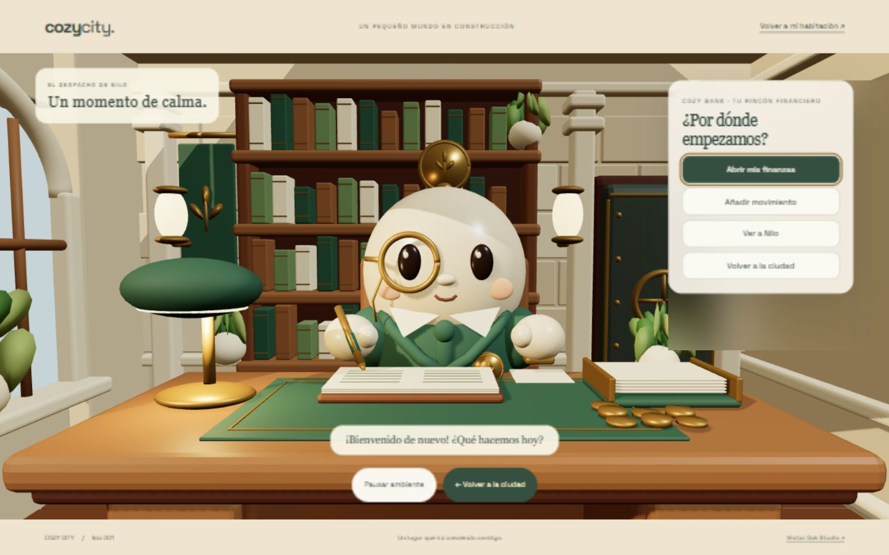
De vuelta con NiloLogin · 360 px
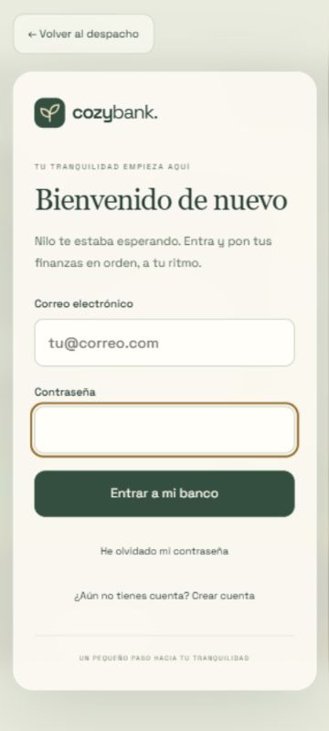
Login · 360 pxDashboard · 360 px
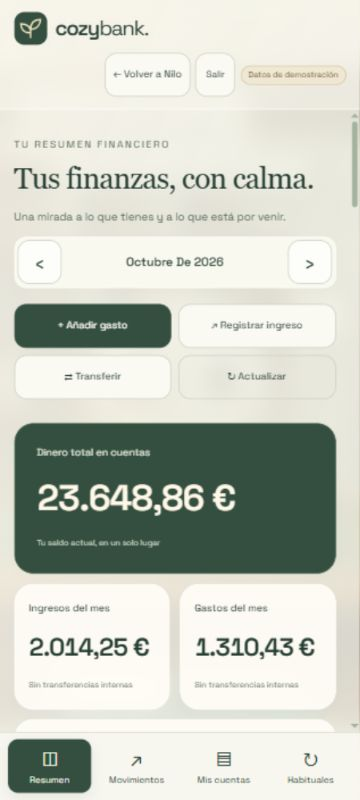
Dashboard · 360 pxMovimientos · 360 px
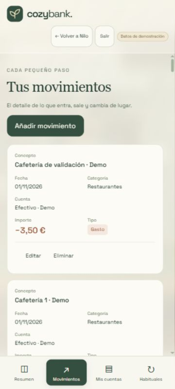
Movimientos · 360 pxFormulario · 360 px
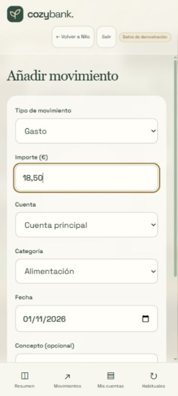
Formulario · 360 px